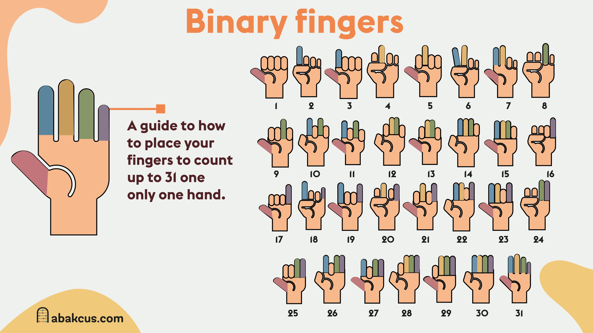

Contar hasta 1023 con los dedos
Una forma curiosa de usar el sistema binario.
Habitualmente utilizamos los dedos de las manos para contar hasta diez. Sin embargo, existe otra forma de hacerlo que amplía considerablemente nuestras posibilidades: usar el sistema binario.
En lugar de asignar a cada dedo un valor numérico consecutivo, como hacemos al contar de la manera convencional, podemos asignarle un valor correspondiente a una potencia de dos. De esta manera, cada dedo representa un bit que puede adoptar dos estados: levantado (1) o bajado (0)
¿Cómo funciona?
El sistema binario utiliza únicamente dos cifras: 0 y 1. Cada posición de un número representa una potencia de dos, empezando por 20 y aumentando sucesivamente.

Podemos aprovechar este principio asignando a cada uno de nuestros diez dedos los siguientes valores:
| Mano | Dedo | Valor |
|---|---|---|
| Izquierda | Pulgar | 1 |
| Izquierda | Índice | 2 |
| Izquierda | Corazón | 4 |
| Izquierda | Anular | 8 |
| Izquierda | Meñique | 16 |
| Derecha | Pulgar | 32 |
| Derecha | Índice | 64 |
| Derecha | Corazón | 128 |
| Derecha | Anular | 256 |
| Derecha | Meñique | 512 |
Cada dedo levantado representa su valor, mientras que cada dedo bajado representa 0.
Para obtener un número, basta con sumar los valores de todos los dedos levantados.
Algunos ejemplos:
- 0: Todos los dedos bajados.
- 1: Únicamente el pulgar izquierdo levantado.
- 5: Pulgar y corazón izquierdos levantados (1 + 4).
- 10: Índice y anular izquierdos levantados (2 + 8).
- 31: Todos los dedos de la mano izquierda levantados (1 + 2 + 4 + 8 + 16).
- 32: Únicamente el pulgar derecho levantado.
- 100: Índice y pulgar derechos, y corazón izquierdo levantados (64 + 32 + 4)
¿Por qué podemos llegar hasta 1023?
Cada dedo tiene dos estados posibles: levantado o bajado.
Por tanto, diez dedos independientes permiten representar:
210 = 1024 combinaciones diferentes.
Como una de ellas representa el 0, podemos contar desde el 0 hasta el 1023, ambos incluidos.
Esto es exactamente lo mismo que ocurre con un número binario de 10 bits
Una curiosidad con aplicaciones reales
Este principio no es simplemente un truco para contar con las manos. Es una demostración física de cómo funcionan los sistemas binarios, que constituyen la base de la representación de información en los ordenadores.
Cada bit puede representar dos estados y combinando varios bits podemos representar cantidades cada vez más grandes de información.